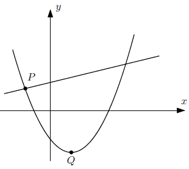

Simulado de Física e Matemática
Tempo restante: 2:00:00
Nome:
1. (EEAr) Se \( f(x) = \frac{x-1}{x+1} + \frac{3x}{\sqrt{x+4}} \) é uma função, seu domínio é \( D = \{x \in \mathbb{R} \mid \text{_________}\}\).
A) \( x > 4 \text{ e } x \neq 1 \)
B) \( x < 4 \text{ e } x \neq \pm 1 \)
C) \( x < -4 \text{ e } x \neq -1 \)
D) \( x > -4 \text{ e } x \neq -1 \)
2. (EEAr) A quantidade de números inteiros positivos que verificam as inequações \( 3x-8 < x \text{ e } x+20 > 10x \), ao mesmo tempo é:
\( 1 \)
\( 2 \)
\( 3 \)
\( 4 \)
3. (EEAr) A solução da inequação \(2(x + 2) + 5x \leq 4(x + 3)\) é um intervalo real. Pode-se afirmar que pertence a esse intervalo o número:
\( 2 \)
\( 3 \)
\( 4 \)
\( 5 \)
4. Na Escola da Marinha Mercante, há alunos de ambos os sexos (130 mulheres e 370 homens), divididos entre os Cursos Básico, de Máquinas e de Náutica. Sabe-se que do total de 130 alunos do Curso de Máquinas, 20 são mulheres. O Curso de Náutica tem 270 alunos no total e o Curso Básico tem o mesmo número de homens e mulheres. Quantas mulheres há no Curso de Náutica?
A) 50
B) 55
C) 60
D) 65
5. As raízes da equação \(−x^2 + 7x − 6 = 0\) são dois números
A) simétricos.
B) naturais pares.
C) primos entre si.
D) inteiros e múltiplos de 3.
6. \( \mathbb{N}\) é o conjunto dos números naturais, \( K = \{3x \mid x \in \mathbb{N} \}\), \( L = \{5x \mid x \in \mathbb{N} \}\) e \( M = \{15x \mid x \in \mathbb{N}\}\). A afirmativa correta é:
A) \(K \cup L = M \)
B) \(K \subset L \)
C) \(K - L = M \)
D) \(K \cap L = M \)
7. Ao comparar o valor de \(f(1)\) e \(f(-1)\) da função \(f(x) = 5x^6 + 4x^2 + 3x - 1\), obtém-se:
A) \( f(1) < f(-1) \)
B) \( f(1) = f(-1) \)
C) \( f(1) > 2f(-1) \)
D) \( f(1) = 2f(-1) \)
8. Na equação \(2^{x+1} + 2^{-x} = 3\), é verdadeira a afirmativa:
A) Uma das raízes é 1.
B) A soma das raízes é um número inteiro positivo.
C) O produto das raízes é um número inteiro negativo.
D) O quociente das raízes pode ser zero (0).
9. O valor real que satisfaz a equação \(4^x - 2^x - 2 = 0\) é um número
A) entre -2 e 2
B) entre 2 e 4
C) maior que 4
D) menor que -2
10. Dada a função \(f(x-1) = x^2 + 3x - 2\), considerando os valores de \(f(1)\) e \(f(2)\), pode-se afirmar corretamente que:
A) \(f(1) = f(2) + 4\)
B) \(f(2) = f(1) - 1\)
C) \(f(2) = 2f(1)\)
D) \(f(1) = 2f(2)\)
11. Sabe-se que a função \(f(x) = \frac{x+3}{5}\) é invertível. Assim, \(f^{-1}(3)\) é:
A) 3
B) 4
C) 6
D) 12
12. (EEAr) Seja a função \(f\) de \(R - \{3\}\) em \(R - \{1\}\), definida por \(f(x) = \frac{x+3}{x-3}\) . Pela inversa de \(f\), o número 5 é imagem do número:
A) 1/4
B) 1/3
C) 4
D) 3
13. Se \(f(x) = \log{}{x}\) e \(a . b = 1\), então \(f(a) + f(b)\) é igual a:
A) 0
B) 1
C) 10
D) 100
14. A equação \( \log_{2}{(9^{x-1+7})} = 2 + \log_{2}{(3^{x-1}+1)} \) possui:
A) duas raízes positivas.
B) duas raízes negativas.
C) duas raízes simétricas.
D) uma única raiz.
15. Se \( \log_{3}{2} = a \) \( \log_{7}{3} = b \), então \( \log_{3}{14} \) é igual a:
A) \(\frac{b+1}{a} \)
B) \(\frac{a+1}{b} \)
C) \(\frac{ab+1}{b} \)
D) \(\frac{ab+1}{a} \)
16. Se \(a > 0\), \(b > 0\), \(c > 0\) e \(c \neq 1\), então é correto afirmar que
A) \( log_{c}{(a+b)} = (log_{c}{a}) + (log_{c} {b}) \)
B) \( log_{c}{(a+b)} = (log_{c}{a}) . (log_{c} {b}) \)
C) \( log_{c}{(ab)} = (log_{c}{a}) + (log_{c} {b}) \)
D) \( log_{c}{(ab)} = (log_{c}{a}) . (log_{c} {b}) \)
17. A desigualdade \( {\frac{1}{2}}^{3x-5} > {\frac{1}{4}}^{x} \) tem como conjunto solução:
A) \( S = \{ x \in \mathbb{R} \mid x > 1 \} \)
B) \( S = \{ x \in \mathbb{R} \mid x < 1 \} \)
C) \( S = \{ x \in \mathbb{R} \mid x > 1 \} \)
D) \( S = \{ x \in \mathbb{R} \mid 1< x < 5 \} \)
18. Seja a função \(f(x) = 2x^2 + 8x + 5\). Se \(P(a; b) \) é o vértice do gráfico de \(f\), então \( \mid a + b \mid \) é igual a
A) 5
B) 5
C) 3
D) 2
19. Uma função quadrática tem o eixo das ordenadas como eixo de simetria. A distância entre os zeros da função é de 4 unidades, e a função tem \(-5\) como valor mínimo. Esta função é definida por
A) \( y = \frac{5}{4}x^2 - 20 \)
B) \( y = \frac{5}{4}x^2 - 20x \)
C) \( y = \frac{5}{4}x^2 - 5 \)
D) \( y = \frac{5}{4}x^2 - 5x \)
20. (EEAr) Considere a equação \( \mid 3x - 6 \mid = x + 2 \). Com respeito às raízes dessa equação, podemos afirmar que elas pertencem ao intervalo
A) \( [ 1, 2 ] \)
B) \( ] 2, 5 [ \)
C) \( ] 0, 4 ] \)
D) \( ] 1, 4 ] \)
21. Seja \( f(x) = \mid x - 3 \mid \) uma função. A soma dos valores de x para os quais a função assume o valor
A) 3
B) 4
C) 6
D) 7
22. Na figura estão representados os gráficos das funções definidas por:
\[ f(x) = (x+1)(x-3) \quad \text{e} \quad g(x) = \frac{x}{2} + 3. \]

As ordenadas dos pontos \( P \) e \( Q \) são, respectivamente:
A) \( \frac{3}{2} \) e \( -3 \)
B) \( \frac{3}{2} \) e \( -4 \)
C) \( \frac{9}{4} \) e \( -3 \)
<
D) \( \frac{9}{4} \) e \( -4 \)
23. Para que \(f(x) = (2m - 6)x + 4 \) seja crescente em \( \mathbb{R} \), o valor real de \( m \) deve ser tal que:
A) \( m > 3 \)
B) \( m < 2 \)
C) \( m < 1 \)
D) \( m = 0 \)
24. Analisando o gráfico da função \(f\) da figura, percebe-se que, nos intervalos \( [-5;-2] \) e \([-1; 2]\) de seu domínio, ela é, respectivamente,
A) crescente e crescente
B) crescente e decrescente
C) decrescente e crescente
D) decrescente e decrescente
25. Qual é a unidade do trabalho?
A) V = d/t
B) F = m*a
C) V = d/t
D) F = m*a
26. Qual é a unidade do trabalho?
A) V = d/t
B) F = m*a
C) V = d/t
D) F = m*a
27. Qual é a unidade do trabalho?
A) V = d/t
B) F = m*a
C) V = d/t
D) F = m*a
28. Qual é a unidade do trabalho?
A) V = d/t
B) F = m*a
C) V = d/t
D) F = m*a
29. Qual é a unidade do trabalho?
A) V = d/t
B) F = m*a
C) V = d/t
D) F = m*a
30. Qual é a unidade do trabalho?
A) V = d/t
B) F = m*a
C) V = d/t
D) F = m*a
31. Qual é a unidade do trabalho?
A) V = d/t
B) F = m*a
C) V = d/t
D) F = m*a
32. Qual é a unidade do trabalho?
A) V = d/t
B) F = m*a
C) V = d/t
D) F = m*a
33. Qual é a unidade do trabalho?
A) V = d/t
B) F = m*a
C) V = d/t
D) F = m*a
34. Qual é a unidade do trabalho?
A) V = d/t
B) F = m*a
C) V = d/t
D) F = m*a
35. Qual é a unidade do trabalho?
A) V = d/t
B) F = m*a
C) V = d/t
D) F = m*a
36. Qual é a unidade do trabalho?
A) V = d/t
B) F = m*a
C) V = d/t
D) F = m*a
37. Qual é a unidade do trabalho?
A) V = d/t
B) F = m*a
C) V = d/t
D) F = m*a
38. Qual é a unidade do trabalho?
A) V = d/t
B) F = m*a
C) V = d/t
D) F = m*a
39. Qual é a unidade do trabalho?
A) V = d/t
B) F = m*a
C) V = d/t
D) F = m*a
40. Qual é a unidade do trabalho?
A) V = d/t
B) F = m*a
C) V = d/t
D) F = m*a
41. Qual é a unidade do trabalho?
A) V = d/t
B) F = m*a
C) V = d/t
D) F = m*a
42. Qual é a unidade do trabalho?
A) V = d/t
B) F = m*a
C) V = d/t
D) F = m*a
43. Qual é a unidade do trabalho?
A) V = d/t
B) F = m*a
C) V = d/t
D) F = m*a
44. Qual é a unidade do trabalho?
A) V = d/t
B) F = m*a
C) V = d/t
D) F = m*a
45. Qual é a unidade do trabalho?
A) V = d/t
B) F = m*a
C) V = d/t
D) F = m*a
46. Qual é a unidade do trabalho?
A) V = d/t
B) F = m*a
C) V = d/t
D) F = m*a
47. Qual é a unidade do trabalho?
A) V = d/t
B) F = m*a
C) V = d/t
D) F = m*a
48. Qual é a fórmula da aceleração?
A) V = d/t
B) F = m*a
C) V = d/t
D) F = m*a
Enviar Respostas
//////